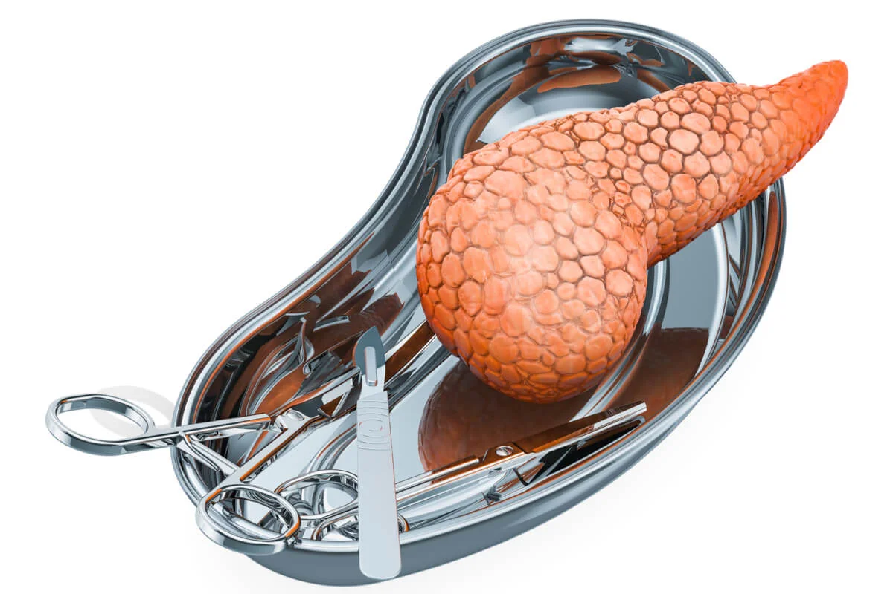

| ¿Qué es el trasplante de pancreas | |
Un trasplante de páncreas es un procedimiento quirúrgico que consiste en colocar un páncreas sano de un donante fallecido en una persona cuyo páncreas ya no funciona correctamente. El páncreas es un órgano que se encuentra detrás de la parte baja del estómago. Una de sus principales funciones es producir insulina, una hormona que regula la absorción de azúcar hacia el interior de las células. |
|
 |
|